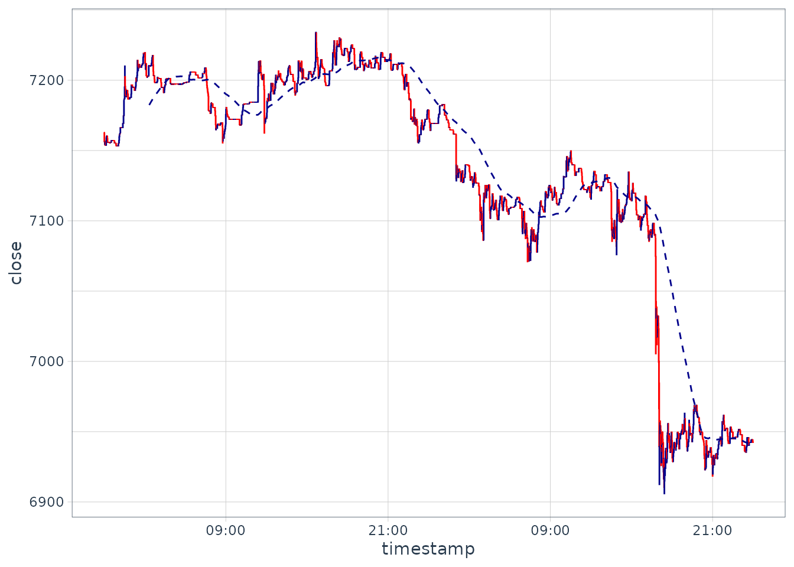

The following examples demonstrate how bitmexr can be used to obtain trade data from BitMEX, and used with other packages such as tidyqaunt to explore and visualise the data.
The core function used for obtaining trade data are trades() and bucket_trades().
trades() collects data regarding individual trades that have been executed on the exchange.
# Get 1000 most recent trades on the exchange
trade_data <- trades(
symbol = "XBTUSD",
reverse = "true",
count = 1000
)bucket_trades() collects trade data which has been summarised into the follow time frames: 1-minute, 5-minute, 1-hour and 1-day. Given the large volume of trades performed daily on the exchange, this function is preferred over trades() if you want to obtain data spanning many days.
# Daily OHLC data from 2017-01-01 to 2020-01-01
bucket_data <- bucket_trades(
binSize = "1d",
startTime = "2018-01-01",
endTime = "2020-05-01",
symbol = "XBTUSD"
)For more fine grained data, you may want to specify a smaller time frame.
# 1-minute buckets from 2020-01-01 until 2020-01-03
bucket_data <- bucket_trades(
binSize = "1m",
startTime = "2020-01-01",
endTime = "2020-01-03",
symbol = "XBTUSD"
)
max(as.Date(bucket_data$timestamp))
#> [1] "2020-01-01"However, the maximum date returned is still “2020-01-01”. This is because the maximum number of rows returned per API calls is 1000, and there are greater than 1000 1-minute buckets spanning the desired 3 day sample. To solve this problem, the package provides map_* variants of the two core functions.
Take our desired 3-day time period again. Using map_bucket_trades() will create the necessary number of API requests to satisfy the desired sample time frame automatically.
bucket_data_long <- map_bucket_trades(
binSize = "1m",
start_date = "2020-01-01",
end_date = "2020-01-03",
symbol = "XBTUSD",
verbose = FALSE
)
max(as.Date(bucket_data_long$timestamp))
#> [1] "2020-01-03"If verbose is TRUE, a progress bar is printed in the console to provide information regarding the expected duration for the function to complete. The maximum date in the sample is now equal to the end date in the function.
The map_trades() function works in a similar way, however because the number of trades per day is not known in advance, it is not possible to estimate how long the function will take. Instead, if verbose is TRUE, this function prints the maximum timestamp from each API call to provide an indication of the current progress and how long is left. The function stops when the start_date is greater than the end_date.
map_trades(
symbol = "XBTUSD",
start_date = "2019-05-03 12:00:00",
end_date = "2019-05-03 12:05:00",
verbose = TRUE
) %>%
select(1:5) %>%
head()
#> Getting trade data between 2019/05/03 12:00:00 and 2019/05/03 12:05:00
#> Current limit is 30 requests per minute
#>
Current progress: 2019/05/03 12:01:11
Current progress: 2019/05/03 12:01:44
Current progress: 2019/05/03 12:03:15
Current progress: 2019/05/03 12:05:08
#> timestamp symbol side size price
#> 1 2019-05-03 12:00:09 XBTUSD Sell 18 5700.0
#> 2 2019-05-03 12:00:13 XBTUSD Sell 1000 5700.0
#> 3 2019-05-03 12:00:13 XBTUSD Sell 5500 5700.0
#> 4 2019-05-03 12:00:13 XBTUSD Buy 100 5700.5
#> 5 2019-05-03 12:00:13 XBTUSD Sell 900 5700.0
#> 6 2019-05-03 12:00:13 XBTUSD Sell 2000 5700.0Without authentication, API requests are limited to 30 per minute. If you have enabled authentication by following you can use the use_auth = TRUE argument to access the higher rate limit of 60 requests per minute.
Note: A warning is given when time frames of greater than 1 day are passed into the function. Due to the large number of trades executed on the exchange each day, this function should only be used for specific time intervals of interest. Using map_bucket_trades() is a better option for time intervals spanning multiple days.
available_symbols() returns a character vector of the currently valid symbols available to request.
paste(available_symbols(), collapse = ", ")
#> [1] "XBTUSD, ETHUSD, XBTM20, XRPUSD, XBTU20, ETHM20, LTCM20, XRPM20, BCHM20, ADAM20, EOSM20, TRXM20"valid_dates() returns the date from which data is available through the API for a given symbol, or all symbols if no symbol is given
valid_dates("ETHUSD")
#> symbol timestamp
#> 1 ETHUSD 2018-08-02 09:06:10The core functions trades() and bucket_trades() also have a rate limiter built in that will initiate a 60 second pause to reset the limit if the the maximum number of requests per minute is approached while using the package.
Once data has been obtained, it is possible to use packages such as the excellent tidyquant to explore/visualise the data further.
bucket_data_long %>%
filter(timestamp > "2020-01-01" & timestamp < "2020-01-03") %>%
mutate(timestamp = as_datetime(timestamp)) %>%
ggplot(aes(x = timestamp, y = close)) +
geom_candlestick(aes(open = open, high = high, low = low, close = close)) +
geom_ma(ma_fun = SMA, n = 200) +
scale_x_datetime(date_breaks = "12 hour", date_labels = "%H:%M") +
theme_tq()
See the tidyquant vignette for more details https://CRAN.R-project.org/package=tidyquant